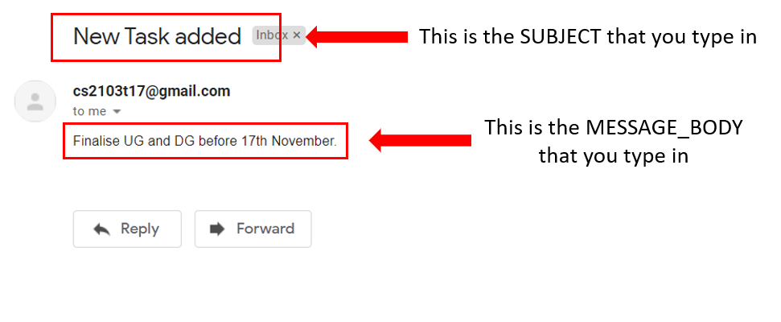

By: Team SE-EDU Since: Aug 2019 Licence: MIT
Team: T17-1
Content
1. Introduction:
MyProject (MP) is for team leaders who prefer to use a desktop app for managing their projects. MP is optimized for those who prefer to work with a Command Line Interface (CLI) while still having the benefits of a Graphical User Interface (GUI). With MP it is a one-stop app to store and manage your projects and their relevant information, this is especially useful if you are always managing multiple projects across different teams. MP has unique functions such as sending emails to members within the app and financial tracking capabilities etc. Currently our app is optimized for students to use but we intend to expand further to working adults as well.
Interested? Jump to the Section 2, “QuickStart” to get started. Enjoy!
2. Quick Start:
-
Ensure you have Java 11 or above installed in your Computer.
-
Download the latest myproject.jar here.
-
Copy the file to the folder you want to use as the home folder for MyProject.
-
Type the command in the command box and press Enter to execute it. e.g. typing help and pressing Enter will open the help window.
-
Some example commands you can try:
-
list : lists all contacts
-
exit : exits the app
-
-
Refer to Section 3, “Features” for details of each command.
| Please do not modify the data file or corrupt it in any way. MyProject will not work as intended if you do! |

3. Features
| Parameters enclosed in square brackets[] are optional. |
3.1. Basic Commands
Here are some basic commands to start and navigate around the app.
3.1.1. Viewing help: help
Provides a url to this user guide for a more comprehensive list and explanation for each command.
Format: help
3.1.2. Checkout a project: checkout
Checkout a project to begin working on the project immediately.
Commands which require a project to be checked out first will be tagged using [Checkout].
Format: checkout INDEX
INDEX is the number used to identify the project in the project list.
Example:
-
checkout 1
3.1.3. Return to previous: back
If you want to return to the previous view page of the app, simply type the command back.
Format: back
Example:
-
checkout 1 -
back
3.1.4. Exiting the app: exit
Once you’re done with using the app, you can use this command to close the app.
Format: exit
3.2. Adding Items
This section deals with adding information to the application.
3.2.1. Add a project: addProject
Adds a new project into your list of projects.
Format: addProject n/PROJECT_TITLE s/PROJECT_DESCRIPTION
Example:
-
addProject n/CS2103 project s/Software engineering project
3.2.2. Add a person: add
Adds a person to your contacts.
When you add a person to your contacts, it will automatically change to displaying your list of contacts.
Format: add n/NAME p/PHONE_NUMBER e/EMAIL a/ADDRESS [t/TAG]…
| A person can have any number of tags (including 0) |
Examples:
-
add n/John Doe p/98765432 e/johnd@example.com a/John street, block 123, #01-01 -
add n/Betsy Crowe t/friend e/betsycrowe@example.com a/Newgate Prison p/1234567 t/criminal
3.2.3. Add a new member: addMember [Checkout]
This command is similar to adding a person to your contacts shown previously, except that you have to be
checked out into a project, and the person will be added to the working project as well.
Format: addMember n/NAME [p/PHONE_NUMBER] [e/EMAIL] [a/address] [t/tag]…
| Adding a member only requires his/her name! |
However it will be good to add as much information as possible.
Example:
-
addMember n/John Doe a/John street, block 123, #01-01 -
addMember n/Betsy Crowe e/betsycrowe@example.com t/friend
To help you better understand how to use this command, here is a step-by-step guide, using the second example.
Step 1: You type in the addMember command, followed by all the information you want to store, which in this case
is her email and also her tag as a friend. With this, before you press enter your screen should look like this:
AddMemberCommand user inputIf your screen looks like the picture above, just press enter and you’re done! Adding a new member is just a simple one step process.
After you press enter you will be able to see the member reflected in the project like this:
AddMemberCommand success project overview displayAnd you will also be able to see her in your contacts like this:
If you look closely at Figure 5. you will see that some of the information does not really seem right. That is because
you have not input it yet, but don’t worry you can always do that later with our edit command which you will further down
the guide.
3.2.4. Add from your contacts: addFromContacts [Checkout]
This command helps to add a person you already saved in your contacts into your project, reducing the need
to type his information all over again. All you need to do is enter the index he is listed at.
Format: addFromContacts INDEX…
INDEX is the number which the person is listed at, and it should be a positive integer eg. 1, 2, 3, ….
You can put multiple indexes to add multiple people to your project at once isn’t that convenient! E.g. addFromContacts 1 3 5
|
Example:
-
addFromContacts 1
To help you better understand how to use this command, here is a step-by-step guide.
Step 1. Find the person you want to add, and take note of the index which the person is listed at. Referring to the picture below, let’s say you want to add 'Bernice Yu' into your project. Notice her index is 2.

Step 2. Type in the addFomContacts command with the index 2
addFromContacts command input.Step 3. Press enter and you’re done! Refer to the picture below to see what your screen should look like.

3.2.5. Set a timetable: setTimetable
Need to keep track of your team members' schedule? Use this command to record down their timetable easily!
Timetable set can be used to generate available meeting timeslots using the command generate
|
Format:
setTimetable INDEX [n/NUSMODS_SHARE_URL] [f/FILEPATH_TO_TIMETABLE]
Example:
-
setTimetable 3 f//home/john/Desktop/aliceTimetable.txt
Set Alice’s timetable to Alice, who has index 3 in the list of persons.
|
File should be formatted as a newline separated list of time ranges, e.g: MONDAY 1000 MONDAY 1200 MONDAY 1400 MONDAY 1600 TUESDAY 1100 TUESDAY 1500 |
-
setTimetable 2 n/https://nusmods.com/timetable/sem-1/share?CS2100=LAB:05,TUT:02,LEC:1&CS2101=&CS2103T=LEC:G13&CS2105=TUT:03,LEC:1&CS3241=TUT:05,LEC:1&CS3243=TUT:01,LEC:1&GEQ1000=TUT:D27
Set timetable to the person with index 2 on the list of persons, by retrieving timetable data from NUSMods.
Below is a step-by-step instruction to guide you through the process of setting a timetable to Alice, through the use of NUSMods:
-
Step 1: Type
setTimetable, followed by the index of the person you wish to set the timetable to, and the URL of the share link.

-
Step 2: Press enter, and you would see the following message. You can even scroll down to view a simple visualization of the timetable set!

setTimetable command success
| Even if you accidentally entered a wrong URL, MyProject would prompt you helpfully! |
3.2.6. Add a task: addTask [Checkout]
Adds an unchecked task to the list of tasks of your current working project.
Format: addTask s/DESCRIPTION c/dd/MM/yyyy HHmm
Example:
-
addTask s/Finish GUI c/06/10/2019 1600
| Whenever you add a time with the prefix c/, the format should be dd/MM/yyyy HHmm e.g 10/12/2019 1600. MyProject will inform you if you attempt to add invalid days such as 30th February. |
3.2.7. Add a project meeting: addProjectMeeting [Checkout]
Adds a new project meeting to the current working project.
Format: Format: addProjectMeeting c/ dd/MM/yyyy HHmm s/MEETING_DESCRIPTION
dd/MM/yyyy HHmm refers to the date and time the meeting is to be held.
MEETING_DESCRIPTION refers to the purpose of the meeting.
Example:
Let’s say that you plan to have a meeting on the 19th November 2019, you want to keep track of this meeting
by recording it down in the MyProject app.
To add a project meeting:
-
Type
addProjectMeeting c/19/11/2019 1300 s/Discussion on version 2and press enter to execute it.Note that this project meeting will be held after the 4th meeting on 16/11/2019 1700 and before the 5th meeting on 29/11/2019 1300. -
Success message with the respective information about the meeting will be displayed. The meeting added will be automatically sorted according to the dates and times in ascending order. Thus, the new meeting added will be placed as number 5.
3.2.8. Add a budget [Checkout]
Add multiple budgets available to the current project.
Format: addBudget [b/NAME_OF_BUDGET AMOUNT NAME_OF_BUDGET AMOUNT…]
3.2.9. Add an expense [Checkout]
Whenever an expenditure is made under a budget, add it to record.
Format: addExpense [INDEX_OF_BUDGET] [s/DESCRIPTION] [ex/AMOUNT SPEND] [c/dd/MM/yyyy HHmm]
3.3. Editing
This section deals with editing information shown on the application.
3.3.1. Edit a person : edit
Edits an existing person in the address book.
Format: edit INDEX [n/NAME] [p/PHONE] [e/EMAIL] [a/ADDRESS] [t/TAG]…
Examples:
-
edit 1 p/91234567 e/johndoe@example.com
Edits the phone number and email address of the 1st person to be91234567andjohndoe@example.comrespectively. -
edit 2 n/Betsy Crower t/
Edits the name of the 2nd person to beBetsy Crowerand clears all existing tags.
3.3.2. Edit a task : editTask [Checkout]
Edits an existing task in the task list of the current project.
Format: editTask INDEX [s/DESCRIPTION] [c/dd/MM/yyyy HHmm] [d/]
Examples:
-
editTask 1 c/05/05/2019 1600 d/
Edits the date and time to05/05/2019 1600and checks the task. -
editTask 2
Unchecks the task.
3.4. Deleting
This section deals with removing information within the application.
3.4.1. Deleting a person: delete
Deletes the specified person from your contacts.
Format: delete INDEX
Examples:
-
list
delete 2
Deletes the 2nd person in the address book. -
find Betsy
delete 1
Deletes the 1st person in the results of thefindcommand.
3.4.2. Remove a member: removeMember [Checkout]
Removes the specified person from the current working project.
Format: removeMember INDEX
INDEX refers to the index that the person is listed at under the members section of the
project overview.
Example:
-
removeMember 1
To help you better understand how to use this command, here is a step-by-step guide.
Step 1. Find the person you want to remove from the project. Let’s say you want to remove 'Bernice Yu' because she just dropped your module. Notice her index is at 1
Step 2. Type in the removeMember command with the index of 1
removeMember command user input.Step 3. Press enter and you’re done! She is now no longer a member of your project.
3.4.3. Delete a task: deleteTask [Checkout]
Deletes the specified task from the current working project.
Format: deleteTask INDEX
INDEX is the number used to identify this task in the task list.
Example:
-
deleteTask 1
3.4.4. Delete a meeting: deleteMeeting [Checkout]
Deletes the specified meeting from the current working project.
Format: deleteMeeting INDEX
INDEX is the number used to identify this meeting in the meeting list.
Example:
-
deleteMeeting 1
3.5. Listing Information
3.5.1. List your contacts: list
Shows you the list of contacts you have currently along with their respective information.
Format: list
3.5.2. List your budgets: listBudget [Checkout]
See the summary of all budget which shows how much money is left with that budget and where is this budget used.
Format: listBudget

3.6. Finding
3.6.1. Find a person by name: find
Finds persons whose names contain any of the given keywords.
Format: find KEYWORD [MORE_KEYWORDS]
Examples:
-
find John
ReturnsjohnandJohn Doe -
find Betsy Tim John
Returns any person having namesBetsy,Tim, orJohn
3.7. Meeting
For every project, you can add meetings to it, and below you will be able to find more useful commands associated with this functionality.
3.7.1. Generate meeting timing: generate [Checkout]
Need to decide on a meeting timing, but having trouble finding a time where all members are free? This command can help suggest meeting timings!
-
Prerequisite: Timetables have been assigned to the members with the command
setTimetable
generate would not give an error if some members do not have timetable assigned to them. Ensure that you have done setTimetable for each of the members in the project before using generate.
|
Format: generate d/DURATION [r/TIMERANGE]
Example:
-
generate d/2 r/MONDAY 0900 MONDAY 1800
Generates all possible meeting timeslots that lasts at least 2 hours, within the time frame of Monday 9am to Monday 6pm.
Below is a step-by-step instruction to guide you through generating a meeting timeslot that lasts for at least 1 hours, between Monday 1000 to Monday 1800:
-
Step 1: To generate a meeting timing for a project, you first need to
checkoutthat project.
-
Step 2: Enter the command with your desired duration of the meeting, and the time range to generate within
generate command-
Step 3: Press enter, and you will see the following result:
| If MyProject is unable to find a timeslot where all members are free, it would try to find another timeslot where most members are free |

3.8. Email
Tired of switching between applications? We got you covered, below you will find some commands which support sending emails right here within the application.
| Do keep in mind that only the user Account in our current version is only compatible with Gmail Account and please ensure that the Access to less secure app in the security setting is enabled before signing in! |
3.8.1. Sign in to your account: signIn
Signs in to the your email account.
Format: signIn ac/ACCOUNT_EMAIL_ADDRESS pa/PASSWORD
ACCOUNT_EMAIL_ADDRESS refers to the sender’s/user’s email address.
PASSWORD refers to the password to the sender’s/user’s email address.
Example:
-
signIn ac/example@gmail.com pa/12345678
| Please Turn on the access to less secure app in your account’s security setting. |
|
This command is required to be executed before the remainder of the email commands can be executed. The correctness of the email address used and the password will be checked. |
3.8.2. Log out from your account: logOut
Logs out from your email account.
Format: logOut
Example:
-
logOut
3.8.3. Send an email: sendMail
Sends an email to the specified person in your contacts.
Format: sendMail r/RECIPIENT_EMAIL su/SUBJECT me/MESSAGE_BODY
RECIPIENT_EMAIL refers to the email address of the recipients.
SUBJECT refers to the email header.
MESSAGE_BODY refers to the email body.
Example:
-
sendMail r/example@gmail.com su/Test me/HelloWorld!
| We will not check the correctness of the person’s email address |
3.8.4. Broadcast an email: broadcastMail [Checkout]
Sends an email to all members in the current working project.
Format: broadcastMail su/SUBJECT me/MESSAGE_BODY
SUBJECT refers to the email header.
MESSAGE_BODY refers to the email body.
Example:
Let’s say that a new task has just been added and you want to inform your group members of the new task. Instead of switching to another
application to inform your group members, you can simply use the broadcastMail command to inform everyone in the group.
To broadcast Email:
-
Type
broadcastMail su/New Task Added me/Finalise UG and DG before 17th Novemberand press enter to execute it. Note that theSUBJECTwill be sent as the email header and theMESSAGE_BODYwill be sent as the email body. -
A success message will be displayed in the box saying "Mail have been sent successfully!"
-
Members will receive the email that looks like the following: 
| We will not check the correctness of the members' email addresses |
3.8.5. Send reminder: sendReminder [Checkout]
Sends a reminder to all members from the current working project of the upcoming Meeting and Task that is due.
Format: sendReminder d/DURATION
DURATION is the number of days from the current time within which the Tasks are due and The Meetings are held.
Example:
Let’s say that you have several meetings and task for the coming week, and you want to remind your group of the upcoming meetings
and the tasks that are supposed to be done by the week.
Instead of typing all the meetings and tasks for the coming week all over again, you can just easily send these lists to their email addresses from the application.
To send reminder:
-
Type
sendReminder d/7and press enter to execute it.Note that the date at the time this screenshot was taken is 10/11/2019, thus, only meeting meetings 2-4 and task 1-3 will be sent as reminders to the members. -
A success message will be displayed in the box saying "Reminders have been sent!"
-
Members will receive an email with the tasks due and meetings happening within the next 7 days.

| We will not check the correctness of the members' email addresses |
3.9. Sorting
The following section provides a set of commands which help with sorting the information inside the application. MyProject makes it very easy and user-friendly by making all sort commands follow the same format and index/order pairing as shown below!
| The default sorting order for the following lists is by increasing order of time(index 2). Whenever MyProject is closed, the ordering will return to the default order. |
3.9.1. Sort tasks: sortTask [Checkout]
This command sorts the tasks in the task list of the current working project.
Format: sortTask INDEX
INDEX refers to the index of the list provided in the highlighted section above which corresponds to the type of sorting you wish to apply.
For example, index 1 corresponds to sorting by alphabetical order. For the case of sorting tasks, only numbers between 1 and 4 are applicable.
Example:
Let’s say you have added many different tasks with different deadlines and progresses into MyProject.
The default sorting order that MyProject offers is by increasing order of time(index 2). However you wish to group those tasks that are done in one group and those not done in another group and
then further sort each group by increasing order of time(index 4) to track the progress of your tasks.
Simply type in the command sortTask 4 and all the tasks in the list will immediately be sorted accordingly.
In addition, whenever you add a new task(Section 3.2.4) or edit the details of an existing task(Section 3.3.2), MyProject will automatically insert
the newly added or edited task into the correct position based on this new sorting order so you don’t have to continuously type this command whenever
you wish to add or edit tasks!
Here is a step by step process on how to do this.
-
Firstly, since this command is labeled with [Checkout] at the start, ensure that you
checkoutto a project first. Notice how the tasks in the task list are currently at the default sorting order which is by increasing order of time.
-
Next, enter the command
sortTask 4into the command line and press enter. You can choose any index from 1-4 depending on which type of sorting order you wish to sort by based on the specifications provided in the highlighted section above.
-
The following success message will be displayed if the input was entered correctly. Check that the type of sorting displayed in the success message is the one you actually wanted.
The tasks in the task list will then be immediately sorted accordingly as shown in the white box.
-
Now let’s say the deadline for task 2(Do UG) is pushed forward by a week and you’ve just completed it. Type in the command
editTask 2 d/ c/04/12/2019 0000(check out section 3.3.2 for more details on the editTask command) into the command line and press enter.
The task will be edited accordingly and immediately be sorted into the correct position as shown below.
3.9.2. Sort spending: sortSpending [Checkout]
Sorts the spending in the budget list of the current working project based on given specification. The implementation is
slightly different from sortTask. MyProject will not show you the list of spending immediately after entering
the command sortSpending. Enter the command listBudget to view the newly sorted list of spending.
Format: sortSpending INDEX
INDEX refers to which type of sorting you want to do. In this case, only integers 1, 2 and 5 are applicable.(Refer to the highlighted section above)
Example:
-
sortSpending 5(Sorts the spending by increasing prices)
3.9.3. Sort meeting: sortMeeting [Checkout]
Sorts the meetings in the meeting list of the current working project based on given specification. The implementation is
exactly the same as sortTask. Refer to the sortTask section for a more detailed explanation.
Format: sortMeeting INDEX
INDEX refers to which type of sorting you want to do. In this case, only integers 1 and 2 are applicable.(Refer to the highlighted section above)
Example:
-
sortMeeting 1(Sorts the meetings by alphabetical order)
3.10. Finance
Imagine today you just attended the Budget meeting and your Organization is kind enough to provide you with budgets for your event! How delightful! What’s better is that you can record this information in MyProject!
3.10.1. Add budget: addBudget [Checkout]
Let’s say the organization gave you budgets on equipment and manpower, let’s first add these budgets to the project.

After adding the budgets, we will be able to see a summary of them at project overview. Currently it only shows the amount remaining which is the same as the amount you input just now because you haven’t spent anything yet.

3.10.2. Add expense: addExpense [Checkout]
One month later…
Now you have gone through quite a few meetings with the planning committee and made some orders online and receive some invoices, what’s next? To record all these expenses, simply use the command addExpense to add it under the budget. In order to do that, you need the index of the budgets which you may already forgot, but you may simply type listBudgets to view them again.
3.10.3. List budgets: listBudget [Checkout]
Now, you are seeing the pie chart representation of the budgets. If you have already overshot the budget, the pie chart will show overshot instead of remaining to remind you!

After all that have been done, a breakdown of the budget situation will be available at the project overview with stacked bar graph indicating the amount remaining and the amount spent.
3.10.4. Excel sheet storage
Keeping the planning committee updated regarding budget is always a challenge isn’t it? Only the treasurer knows the stuff inside out? Fret not, MyProject is here to help! Every update on the budget information will be recorded in an excel sheet located in the budgets folder. It creates a sheet per project and display the budgets and expenses under the budget in a table form. You can easily send this comprehensible document to your team members to update them!
3.11. Performance tracking
Knowing that it is hard to keep track of what every needs to do, or has done so far, MyProject gives you a simple way of tracking the performance of each member as well. The following section will give you all the details you need to know about this feature.
3.11.1. Assigning a task: assignTask [Checkout]
This command allows you to assign a task to one or more of your members in the project.
Format: assignTask TASK_INDEX PERSON_INDEX…
TASK_INDEX refers to the index at which the task is displayed at.
PERSON_INDEX refers to the index at which the member is displayed at. (You can input more than 1 index)
Example:
-
assignTask 1 1
You can assign a task to multiple people easily just by including all of their indexes E.g. assignTask 1 1 3 5 this assigns task 1 to member 1,3 and 5.
|
To help you better understand how to use this command, here is a step-by-step guide.
Step 1. Find the task you want to assign and the members you want to assign the task to, and take note of their indexes.
Step 2. Type in the assignTask command along with the correct indexes.
assignTask command with the correct inputStep 3. Press enter and you’re done! You will now see the tasks reflected under the respective members in your contacts.
You will see a success message:
assignTask command success messageAnd also see the task reflected under the members:
3.11.2. Unassigning a task: unassignTask
With the ability to assign task, naturally you should be able to unassign a task as well, and you can do that with this
command.
Format: unassignTask PERSON_INDEX TASK_INDEX…
PERSON_INDEX refers to the index of the person as displayed in your contacts
TASK_INDEX refers to the indexes of the tasks as displayed under the specific person
Example:
-
unassignTask 1 1
You can unassign one or more tasks at once from a person by specifying all the task indexes. E.g. unassignTask 1 1 3 5
this unassigns tasks 1, 3, and 5 from the first person.
|
To help you better understand how to use this command, here is a step-by-step guide.
Step 1. Identify the tasks you want to unassign and the person you want to unassign the tasks from, and take note of their indexes.
Step 2. Type in the unassignTask command with the relevant inputs
unassignTask command inputStep 3. Press enter and you’re done!
You will see a success message:
unassignTask command success messageAnd you will no longer see the tasks reflected under the person.
3.11.3. Mark attendance: markAttendance [Checkout]
MyProject also allows you to mark the attendance of one or more members for a meeting.
Format: markAttendance MEETING_INDEX PERSON_INDEX…
MEETING_INDEX refers to the index of the meeting as displayed in the project overview
PERSON_INDEX refers to the index of the person as displayed in the project overview
Example:
-
markAttendance 1 1
You can mark the attendance of multiple people at once, just by specifying all the indexes of the persons E.g. markAttendance 1 1 3 4
this marks the attendance for meeting 1 for members 1, 3 and 4.
|
To help you better understand how to use this command, here is a step-by-step guide.
Step 1. Identify the meeting you want to mark attendance for, and the members who were present.
Step 2. Type in the markAttendance command with the relevant inputs.
markAttendance command inputStep 3. Press enter and you’re done!
You will see a success message:
markAttendance command success messageAnd the meeting will show up under the information of the person like this:
3.11.4. Viewing performance overview: showPerformanceOverview
After assigning the tasks and marking the attendance of members, you can use this command to give you a comprehensive
view of how each member is performing within the project isn’t that convenient!
Format: showPerformanceOverview
There are 4 attributes that we calculate for every member which constitutes their performance:
-
Number of tasks completed
-
Percentage of assigned tasks completed (Rate of task completion)
-
Number of meetings attended
-
Percentage of total number of meetings attended (Rate of attendance)
Refer to the pictures below to understand more about how we display this information in a organised manner to you.
-
Table showing the number of task each member completed:
-
Table showing the percentage of their assigned tasks each member completed:
-
Table showing the number of meetings each member attended:
-
Table showing the percentage of the total number of meetings each member attended:
-
Lastly you can also view each member individually after scrolling through the tables: